— Journal · Real Wedding
Imagine exchanging vows amidst the sun-drenched vineyards of Provence, with olive tree fields stretching towards a horizon painted in vibrant hues. This captivating setting played host to Sandra and Pedro's unforgettable wedding celebration, a testament to exquisite taste and timeless elegance.
Their journey began with a whimsical prelude at the breathtaking Les Carrières de Lumières in the Vaucluse, a former quarry turned immersive art exhibit, where guests were dazzled by projection shows and the magic of their story. The main celebration then unfolded at the majestic Château d'Estoublon, a renowned winery steeped in history and nestled amidst rolling hills.
The team at Lavender and Rose, led by Kerry and Jennifer, orchestrated every aspect of the day with flawless precision. Bottega 53 photographed alongside our cameras, Floresie dressed the ceremony arches and reception tables in soft blooms, and Inspiration Live Music kept the bride and groom dancing among their closest friends all night.
Sandra and Pedro's celebration at Château d'Estoublon was not just a luxurious event ... it was a symphony of love, laughter and breathtaking beauty, every detail chosen to create a day that will forever be etched in the memories of everyone present.
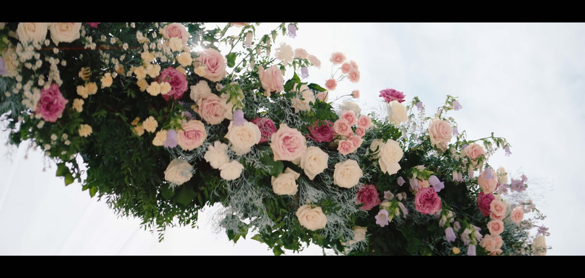
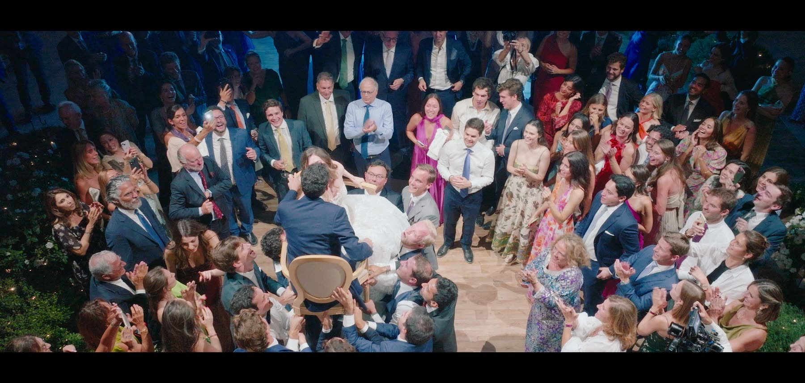
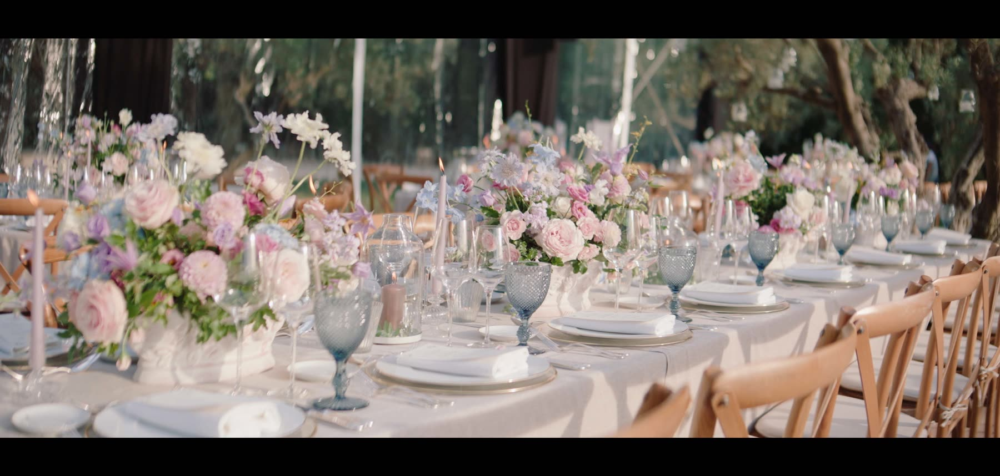
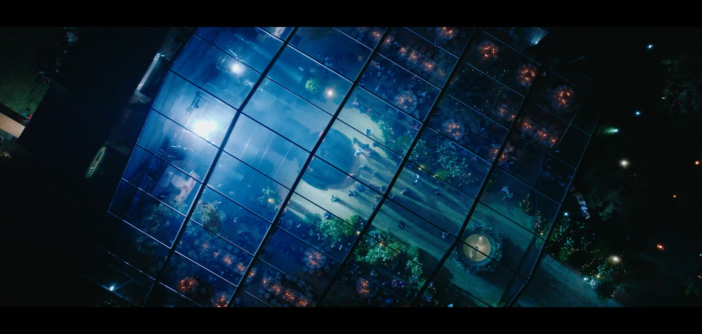
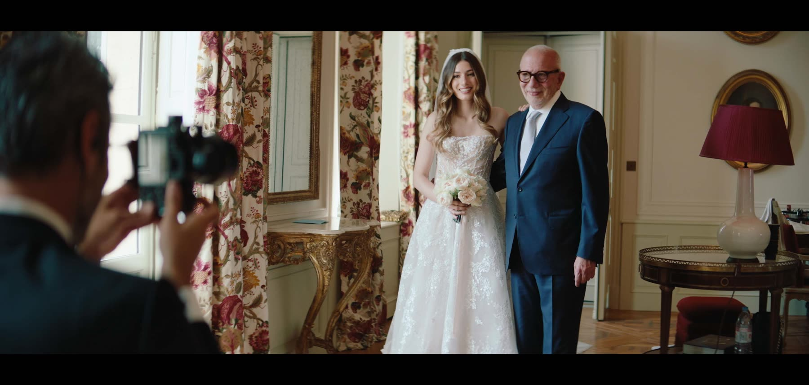
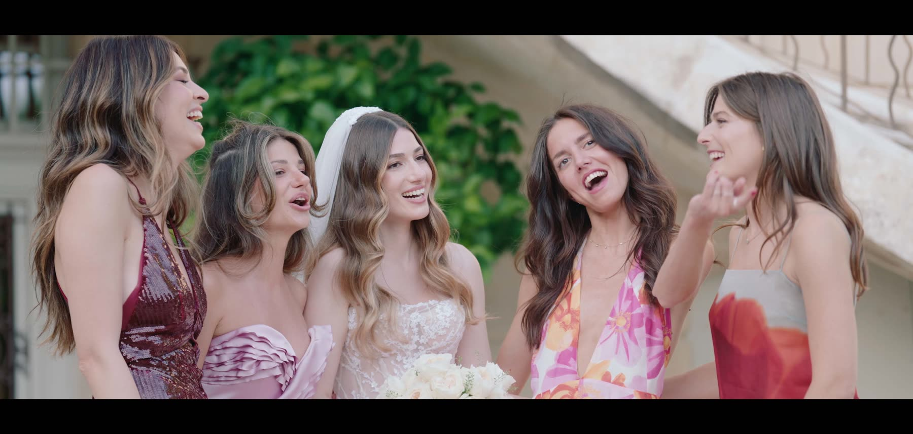
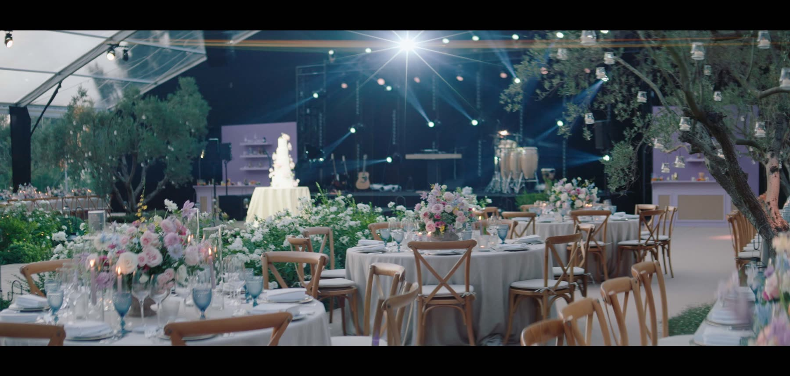
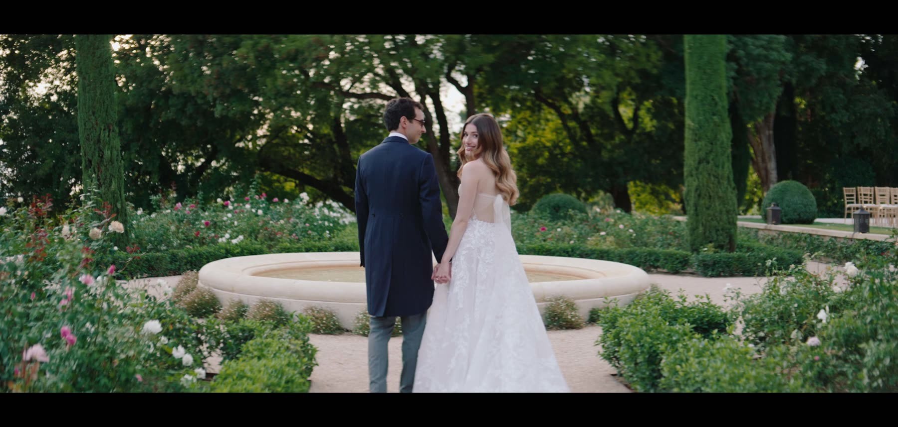
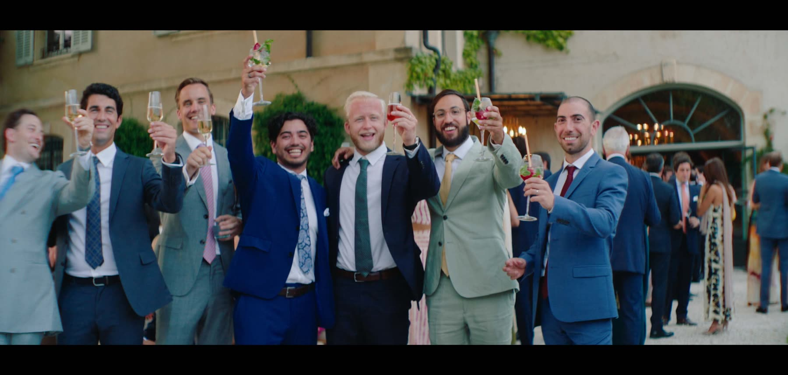
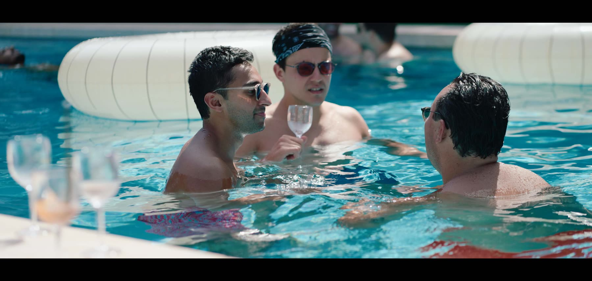
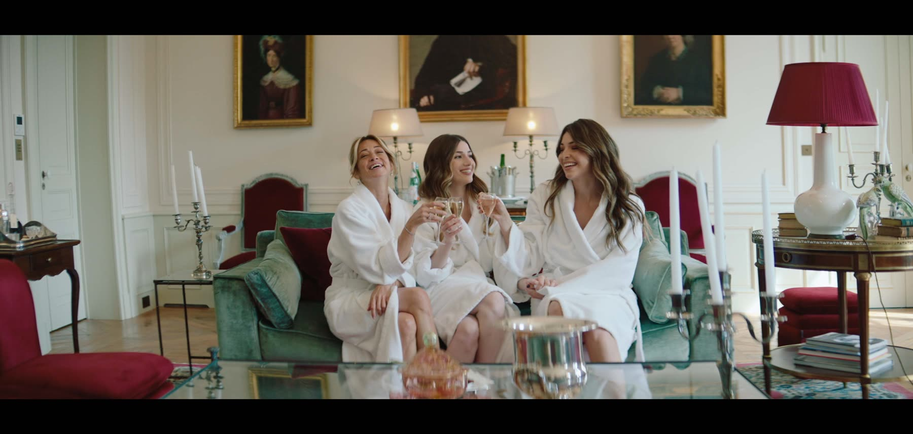
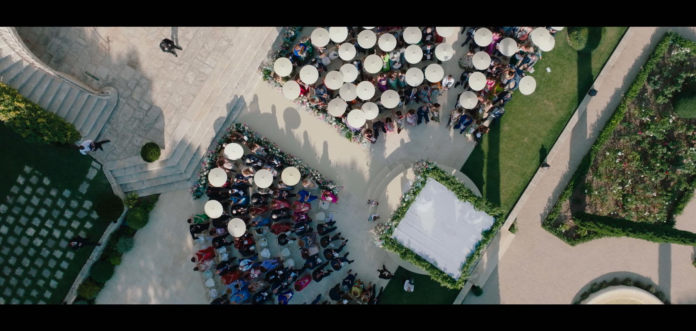
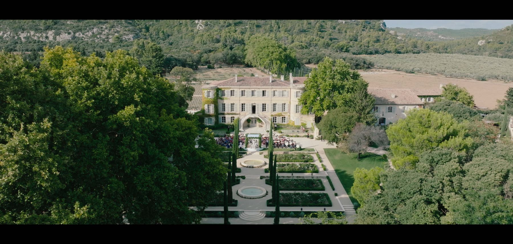
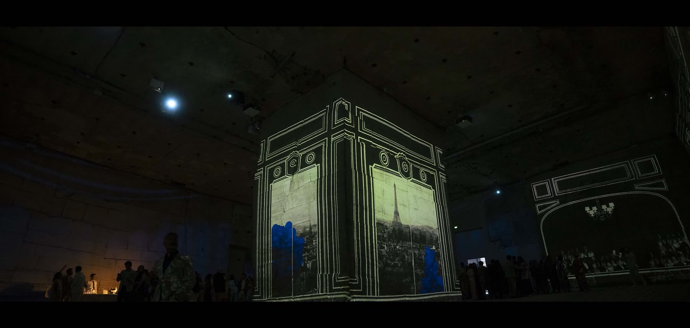
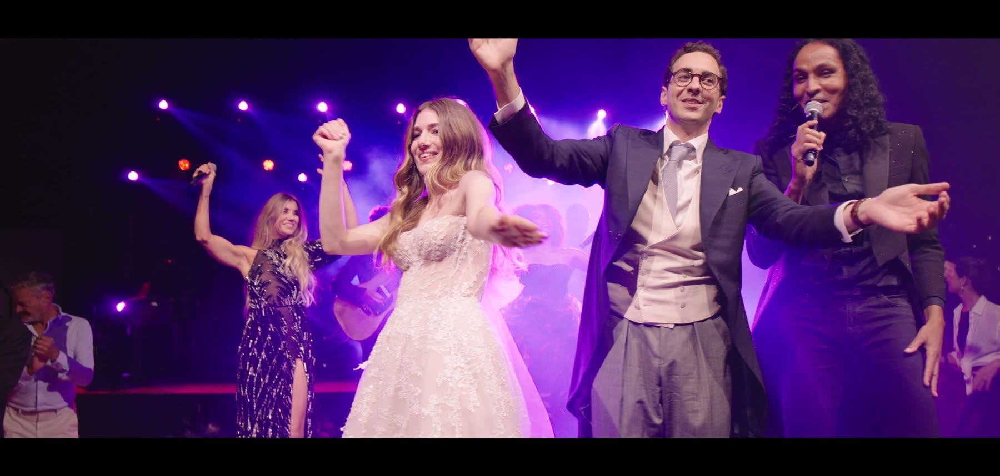
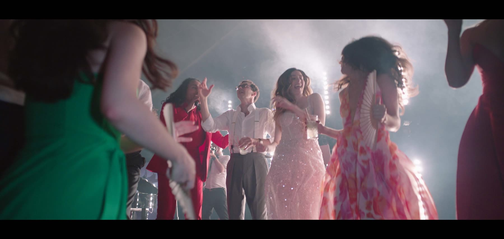
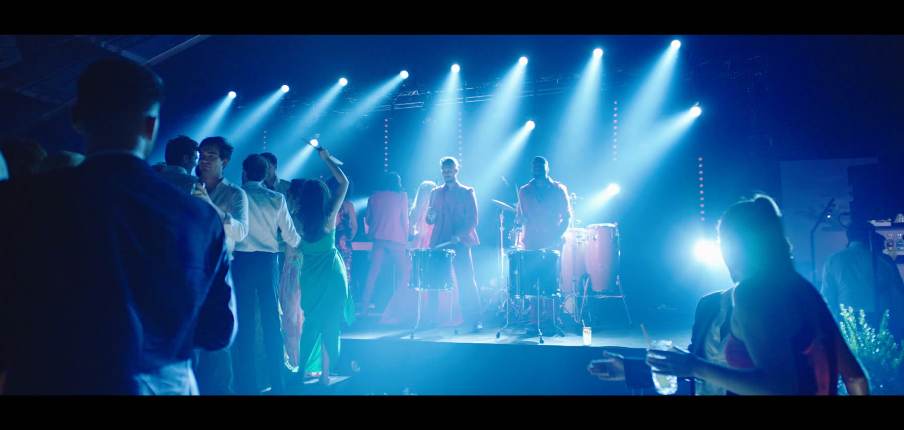
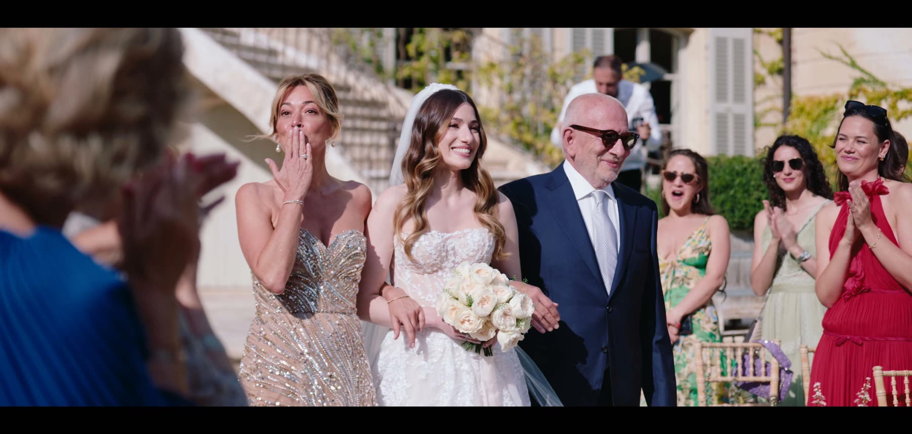
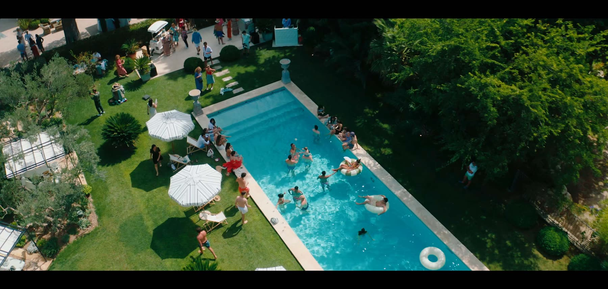
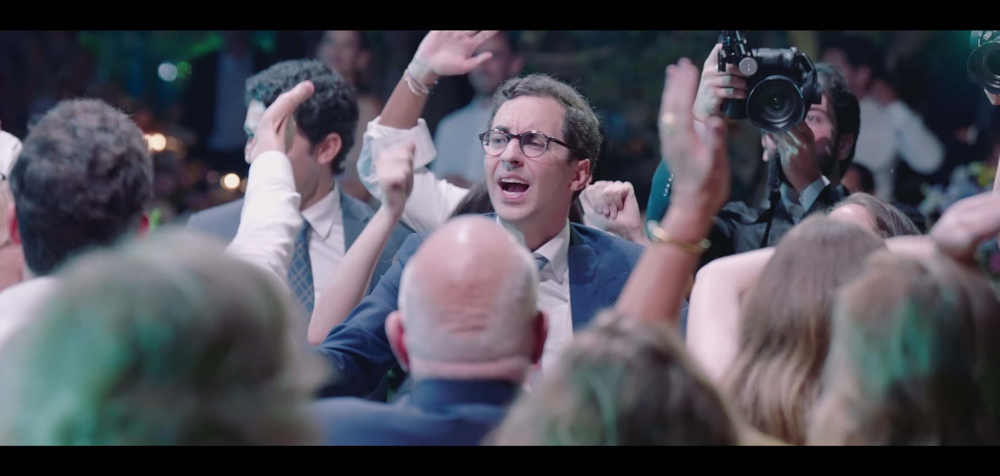
— Begin Your Journey